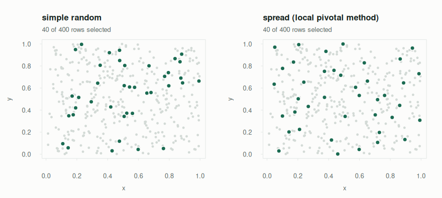

Take a probability sample, then say something defensible about the population it came from.
Pulling rows out of a data frame is easy. The hard part is what comes next: someone asks what the total was across all 40,000 invoices, and you examined 200. Answering honestly needs to know how likely each examined row was to be picked, and that number lives in the design, not in the sample. drawn keeps the design around, so a sample can answer for itself:
set.seed(42)
invoices <- data.frame(
id = 1:600,
site = rep(c("north", "south", "east", "west"), times = c(300, 180, 90, 30)),
value = round(rlnorm(600, meanlog = 6, sdlog = 1.1), 2)
)
plan <- design_stratified(strata = "site", n = 60, min_per_stratum = 2)
s <- draw(invoices, plan, seed = 1, weights = TRUE)
ht_total(s, "value")
#> Horvitz-Thompson total (stratified design, n = 60)
#> estimate 380,046.5
#> se 49,499.7 (analytic)
#> 95% CI 280,886.7 to 479,206.3 (t, 56 df)
#> deff 0.994 (about the same as simple random sampling)The true total is 428,704.5. The standard error is the point: without it you have a number; with it you have an estimate, an interval on the design’s own degrees of freedom, and a design effect that says what the design bought you.
What it does that other packages don’t
R has excellent sampling software. drawn is built to sit between it, and to make the step from “draw” to “estimate” hard to get wrong.
drawn |
sampling |
survey |
spsurvey, BalancedSampling
|
dplyr::slice_sample() |
|
|---|---|---|---|---|---|
| Draws the sample | yes | yes | no | yes | yes |
| Data frame in, data frame out | yes | index vectors | — | yes / vectors | yes |
| Design is a reusable, printable value | yes | no | yes (for analysis) | no | no |
| Inclusion probabilities before drawing | yes, exact | yes | no | yes | no |
| Standard errors from the same object | yes | separate functions | yes | yes | no |
| Variance estimator chosen to match the design | yes, and named | you choose | you specify | yes (spatial) | — |
| Plan → draw → estimate → hand off | one package | — | — | — | — |
Where the others go further, use them: sampling has a dozen unequal-probability algorithms and calibration; survey does regression, calibration and replicate weights, and as_svydesign() hands a sample straight to it; spsurvey has GRTS designs and a full environmental-monitoring workflow.
The workflow
1. Size it. You rarely know n; you know the margin of error you can live with.
plan_size(margin = 5, sd = 40, N = 20000, deff = 1.5, response = 0.8)
#> Sample size for a mean
#> draw 454
#> to analyse 363 (after 80% response)
#> margin +/- 5 at 95% confidence
#> assuming sd 40, deff 1.5, N 20,0002. Describe the design, and interrogate it before drawing. A design is a value. Ask it which rows it can reach, and at what probability:
tapply(inclusion_prob(invoices, plan), invoices$site, unique)
#> east north south west
#> 0.1 0.1 0.1 0.13. Draw, with weights = TRUE to attach each row’s inclusion probability (.prob) and design weight (.weight).
4. Check what you got.
sample_summary(s)
#> Sample of 60 from 600 (stratified design)
#> sampling fraction 0.1
#> design weights 10 to 10 (cv 0)
#>
#> by site:
#> group drawn in frame rate
#> east 9 90 0.100
#> north 30 300 0.100
#> south 18 180 0.100
#> west 3 30 0.1005. Estimate a total, a mean or a proportion, overall or by domain. Domain estimates use the whole sample, not a subset of it, which is what keeps their standard errors right:
ht_mean(s, "value", by = "site")
#> Hajek mean by domain (stratified design, 95% CI, t, 56 df)
#> site n mean se ci_lower ci_upper method
#> east 9 853.6 246.91 358.94 1348.2 analytic
#> north 30 577.3 116.22 344.47 810.1 analytic
#> south 18 693.3 151.00 390.86 995.8 analytic
#> west 3 174.6 47.09 80.26 268.9 analytic6. Hand off anything this package does not do:
des <- as_svydesign(s) # a survey.design, with matching SEs
survey::svyquantile(~value, des, 0.5)The designs
| Design | Selects | Size | Variance estimator |
|---|---|---|---|
design_simple() |
rows uniformly at random | n |
exact |
design_stratified() |
a share of each stratum: proportional, equal or Neyman |
n total |
exact |
design_systematic() |
every k-th row from a random start | interval |
successive-difference approx. |
design_cluster() |
whole clusters | n_clusters |
exact |
design_multistage() |
clusters, then rows within them |
n_clusters, n
|
exact two-stage |
design_weighted() |
probability proportional to size | n |
exact (Poisson), Deville (systematic) |
design_certainty() |
everything above a threshold, plus any design below it |
rest’s own |
rest’s own |
design_spread() |
a sample spread evenly over a map or covariates | n |
local-mean approx. |
design_temporal() |
a fixed number per time interval | per_interval |
exact |
design_spatial() |
a simple random sample inside a region | n |
exact |
design_reservoir() |
a fixed-size sample from a stream, in one pass | n |
exact |
design_bootstrap() |
resampled replicates, simple or block | n_replicates |
not a survey design |
Every estimate says which estimator produced its variance, and any approximation is named when it prints.
Spread the sample, not just the rows
When what you measure varies smoothly across space — biomass, soil carbon, footfall — a sample that covers the map evenly is worth far more than one that clumps. design_spread() uses the local pivotal method (Grafström, Lundström and Schelin 2012): exact inclusion probabilities, but neighbours compete, so clumps and gaps become rare.
set.seed(1)
plots <- data.frame(x = runif(400), y = runif(400))
plots$biomass <- 100 + 80 * plots$x + 60 * sin(4 * plots$y) + rnorm(400, 0, 10)
op <- par(mfrow = c(1, 2))
plot(design_simple(n = 40), plots, type = "map", coords = c("x", "y"), seed = 3,
main = "simple random")
plot(design_spread(c("x", "y"), n = 40, scale = FALSE), plots, type = "map",
seed = 3, main = "spread (local pivotal method)")
par(op)
spread_of <- function(design) sd(vapply(1:200, function(i) {
ht_total(draw(plots, design, seed = i, weights = TRUE), "biomass",
variance = "none")$total
}, numeric(1)))
c(simple = spread_of(design_simple(n = 40)),
spread = spread_of(design_spread(c("x", "y"), n = 40, scale = FALSE)))
#> simple spread
#> 2397.508 901.178Same sample size, a fraction of the error.
Told when the answer isn’t available
Some designs have no closed-form inclusion probability, and some samples cannot support a variance. drawn says so, and says what to change, rather than returning a plausible number:
inclusion_prob(invoices, design_weighted("value", n = 60))
#> Error: `design_weighted(method = "successive")` has no closed-form inclusion probability.
#> Its weights govern each successive draw, not each row's chance of ending up in
#> the sample. Use method = "systematic" or "poisson" for a design whose inclusion
#> probabilities really are proportional to the weights.
#> Or pass simulate = TRUE to estimate it by Monte Carlo.
one_each <- draw(invoices, design_stratified("site", n = 4, min_per_stratum = 1),
seed = 1, weights = TRUE)
ht_total(one_each, "value")
#> Horvitz-Thompson total (stratified design, n = 4)
#> estimate 154,946.4
#> se NA
#>
#> No variance is available for this sample. 4 strata `east`, `north`,
#> `south`, `west` each have a single sampled row, so the variation
#> within them cannot be measured and leaving it out would understate
#> the standard error. Draw at least two rows per stratum
#> (min_per_stratum = 2). The stratified jackknife needs two units per
#> stratum as well.Learn more
- Get started walks through the whole workflow on one frame.
- Choosing a design compares the designs on the same population, and shows when each one pays.
- How the estimates work sets out every variance estimator, with references and simulation checks.
- Walkthroughs: an audit sample and a spatially balanced field survey.
Credit
The sampling routines began as an R port of sample_py.